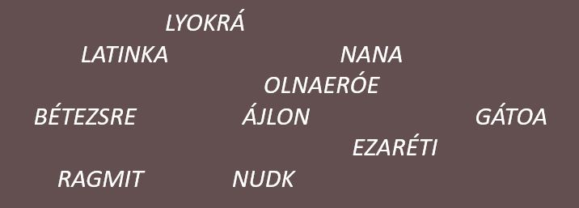
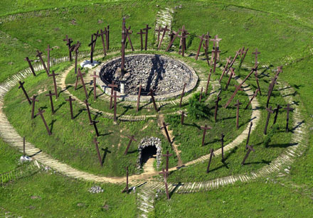

IV. Béla megérkezett Fülekre, de nem tudja, hogy merre induljon tovább, segíts neki!


Ide írd a megfejtést, ami elvezet a következő településig!
A terület az őskortól lakott. A 13. században két település állt itt, Muhi mezőváros és Poga falu. 1241-ben itt zajlott a muhi csata, amelyben a tatárok legyőzték IV. Béla seregeit. A település megsemmisült, a 14. századra települt be újra. Eger eleste és a mezőkeresztesi csata után újra pusztává vált. Az országos jelentőségű útvonal mentén fekvő Muhi a 14. század óta a diósgyőri uradalom része, a 16. század elejéig királynéi birtok. II. Lajos 1520-ban engedélyezte, hogy a településen két országos vásárt tartsanak. Török puszítások 1526-ban, 1541-ben és 1583-ban is sújtják a falut. 1596 után a település elpusztul. A diósgyőri uradalom Muhi földjeit majorságnak használják. Poga a 18. században újra benépesült, 1928-ban pedig átnevezték Muhira.
1241-et írunk, a tatár seregek megérkeztek Magyarországra. IV. Béla magyar király úgy dönt, hogy Muhinál próbálja megállítani őket, ám a csata rosszul alakul, a királynak menekülnie kell egy előre megtervezett útvonalon! Az útvonal minden állomásán élelem és egy friss ló várja, hogy minél gyorsabban haladhasson. Helyzetét nehezíti, hogy az útvonalat megtervező hadvezére elesett a csatában, de nincs minden veszve, mert hagyott maga után jeleket, amiket helyesen értelmezve segíthetsz a királynak, hogy merre kell mennie!
Kód megadása a kezdéshez:
Tudnivalók a játékról:
- Összesen 6 feldatot kell megoldani, hogy a király megmeneküljön.
- Ha elakadnátok, minden feladathoz tartozik segítség, amit a lap alján találtok.
Már elfelejtettétek, hogy mi történt Muhinál? Nézzétek meg az alábbi videót!
A csata eldőlt, a tatárok bekerítették a magyarok szekértáborát. A tatár csapatok elhelyezkedését figyelembe véve határozd meg a három legígéretesebb kitörési pontot, a király majd eldönti, hogy melyiket választja!
Ide írd a három legígéretesebb kitörési pontot szóközzel elválasztva!
A király és kísérete sikeresen kitört a szekértáborból!
Egyelőre nem sikerült kitörni a szekértáborból!
A = 1, Á = 0, É = 6, I = 9, M = 8, N = 7, O = 5, R = 2, U = 4, Z = 3
Először a kék egységek értékét számold ki a sárga-kék és a sárga+kék képletekből.
2sárga-2kék=1 -> sárga-kék=0,5, vagyis a sárga egységek 0,5-el nagyobbak, mint a kékek. Sárga+kék=3,7 -> 3,7-0,5=3,2 -> 3,2/2=1,6. A kék egységek értéke tehát 1,6.
Számold össze a szekértábor egyes elemeinél található tatár egységek értékét.
A királynak sikerült Bélapátfalvára eljutni, de nem nyugodhat meg, a tatárok a nyomában vannak. Tovább kell mennie a következő váltópontra, de senki sem tudja, hogy az pontosan hol van!
Ide írd a következő települést, figyelj a kis- és nagybetűkre!
Irány Fülek!
Egyelőre nem sikerült megfejteni a következő állomást!
A kódot székely-magyar rovásírással írták.
A rovásírást jobbról balra kell olvasni.
A szöveg latin átírásban a következő: északnyugat felé rablólovag fulkó
IV. Béla megérkezett Fülekre, de nem tudja, hogy merre induljon tovább, segíts neki!
Ide írd a megfejtést, ami elvezet a következő településig!
Helyes megoldás, irány Murány vára!
Egyelőre nem sikerült megfejteni a következő állomást!
Az anagrammák neveket rejtenek.
Keresd a IV. Bélához köthető személyeket.
Használd az első feladatnál megadott kódokat!
Vedd fel a trubadúrládád hangerejét!
IV. Béla megérkezett Murány várához, ám akadt egy kis problémája, a várúr jelszó nélkül nem akarja beengedni.
Ide írd a megfejtést, figyelj a szóközökre!
Helyes sorrend!
Egyelőre nem sikerült megfejteni a helyes sorrendet!
Ide írd a jelszót!
Helyes jelszó!
Rossz jelszó! Mik vagytok ti tatárok?!
A helyes sorrend: 5 7 6 9 2 4 10 1 3 8
Koppány lázadása: 998, Aranybulla: 1222, Kötöny befogadása: 1239
1239-998=241 -> 2+4+1=7 -> 1222-7=1215
Murány várából idő előtt távoznia kellett a királynak, mert tatár seregek érkezéséről kapott jelentést, ezért megindult Besztercebánya felé. Tovább bonyolítja helyzetét, hogy útközben az eredeti útirányán is változtatnia kell a barbár hordák miatt. Nagy a bizonytalanság, de hátha ti biztonságos helyre tudjátok vezetni IV. Bélát.
Ide írd a következő települést!
Helyes megoldás, vár Liptóújvár!
Egyelőre nem sikerült megfejteni a következő állomást!
A pirossal jelzett betűk a következő szöveget adják ki: Menedék legközelebb ott vár, hol a Belá és a Vág egybefolyik.
Nézd meg egy térképen, hogy melyik település található a Vág és a Belá torkolatánál.
A megfejtés Liptóújvár
Kellemes hely Liptóújvár. Jó lenne pár napig itt maradni, vadászgatni, lakmározni. Csak hát ezek a mongol barbárok nem akarnak leszakadni Béláról, Batu kán megmondta, el kell fogni! Újra útra kell kelni, mondjátok meg ti, hogy merre menjen a király!
Kattints bele a keresztrejtvénybe!
3 + (3 - 2 - 2 - 1) =
(5 - 3 - 4 - 3) + 2 =
4 - 3 - 6 - 2 =
1 - 5 - 9 - 1 =
(6 - 7 - 1 - 2) - 3 =
(2 - 4 - 3 - 3) - 1 =
_8°5_'0_.7"N _8°46'_2._"E
Ide írd a következő települést!
Helyes megoldás, irány Znióváralja!
Egyelőre nem sikerült megfejteni a következő állomást!
A keresztrejtvény megfejtése: merrejárakirály
3 - 2 - 2 - 1 => A 3. feladat merre jár a király szövegének 2. sorának, 2. szavának (1 szó = 2 szóköz közötti karakterek) 1. karaktere: 1
A koordinátából hiányzó számok: 4, 8, 6, 1, 2, 2. Egészítsd ki a koordinátát és keress rá a Google-ben!